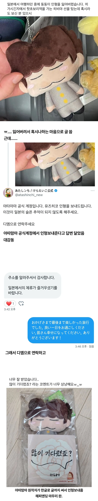

https://www.fmkorea.com/best/10310802309

https://www.fmkorea.com/best/10310802309



그렇네 선자체는 일본글씨체 처럼 둥근 선의 맛이 있네 ㅋㅋㅋ 한글은 직선적으로 딱딱한데
와 글 예쁘네
메모지 귀엽네 엄마가 맨날 아카이 바라 노래 부르는데
동동이 야식 먹어보고싶음
이건 아까워서 뜯지도 못하겠다
밀봉한상태로 진열장 보존
감동이다 ㅠㅠ
오늘은 아따맘마 사이코패스 만화 보고 자야지
흠흠흠 위플래쉬
글씨 나보다 잘 쓰네ㅋㅋㅋㅋㅋ
한국인인 나보다 글씨체가 예쁘네
정말로
안녕하세요! 감사해요! 잘있어요! 다시만나요! 가 되었다.
곤니찌와 아리가또 사요나라 마타아이마쇼
ㅌㅋㅋㅋㅋㅋ 아 일본 트위터 글같음
우와 부럽다
뭉클해
잍본인이 쓴거임? 개잘썼는데 ㄷ 언어를 쓸 때 그 언어를 알고 쓰는 거와 모르고 따라 그리는 것의 간극이 참 큰데 저건 한국어를 이해하고 쓰는 모양새인데?
한자 획순이랑 어느정도 통하는 면이 있긴 하자너
혹시 일본에서 잃어버린 제 텐가를 주우신 분 찾습니다...
저어~~~~기 길가다 하수구에 지나가는거 본것같아 ㅋㅋ
난 저 일본인들 특유의 한글글씨가 좋더라고